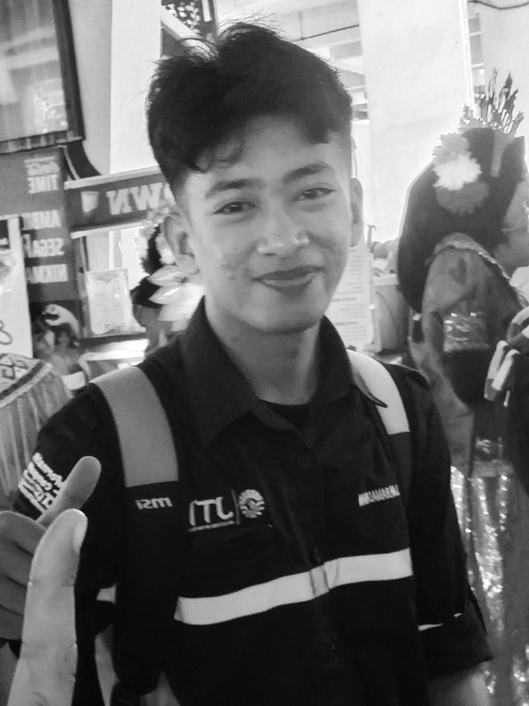

Semesta yang bisa diakses siapa saja
Menjadi galeri tempat pemula merasa disambut, bukan dihakimi — di mana setiap citra punya ruang untuk dilihat.
Tentang
LUCENT bukan sekadar kumpulan gambar. Ini tempat latihan untuk memperhatikan — dan alasan untuk tidak berhenti melakukannya.
Tujuan
Kami ingin ruang yang tenang untuk melihat citra semesta dengan sungguh-sungguh — tanpa distraksi, tanpa gulir tak berujung.
Halaman ini dibuat agar siapa pun bisa menikmati keindahan antariksa tanpa harus memiliki teleskop. Semua citra berasal dari arsip NASA dan dikelompokkan per tema agar mudah ditelusuri. Setiap gambar dilengkapi keterangan resminya — supaya kamu bisa menikmati pemandangannya sekaligus memahami apa yang sedang kamu lihat.
Tujuannya sederhana: membuat orang berhenti sebentar, menikmati satu bingkai semesta, lalu mungkin tergoda untuk keluar dan menatap langit sendiri.
“Kita terbuat dari bintang — dan setiap citra semesta adalah cermin yang memantulkan asal-usul kita.”
Cerita
LUCENT bermula dari satu malam ketika langit begitu bersih dan pertanyaan mulai muncul: apa yang sebenarnya ada di balik titik-titik cahaya itu? Tidak ada teleskop, hanya rasa penasaran dan kebiasaan menelusuri arsip citra NASA secara perlahan.
Sejak itu, kebiasaan itu tumbuh: mengumpulkan citra dari pilar kelahiran bintang, planet-planet di tata surya, Bumi yang dilihat dari orbit, sampai jejak kaki manusia di Bulan. Nama LUCENT diambil dari kata yang berarti “bercahaya” — pengingat bahwa yang kita kejar selalu soal cahaya, bahkan yang telah menempuh miliaran tahun untuk sampai kepada kita.
Visi & Misi
Menjadi galeri tempat pemula merasa disambut, bukan dihakimi — di mana setiap citra punya ruang untuk dilihat.
Setiap citra disertai keterangan resmi NASA dan tautan sumbernya, agar pengunjung belajar sekaligus menikmati.
Kami menghargai ketelitian, keterbukaan, dan kejujuran citra — termasuk menyebut mana yang ilustrasi dan mana yang foto asli.
Profil

Mahasiswa
Pembuat & Kurator LUCENT
Seorang mahasiswa yang jatuh cinta pada antariksa lewat citra-citra NASA. Melalui LUCENT, ia ingin berbagi cara melihat semesta sekaligus mendokumentasikan perjalanan belajarnya.
Fokus: nebula · planet · Bumi dari orbit · misi antariksa